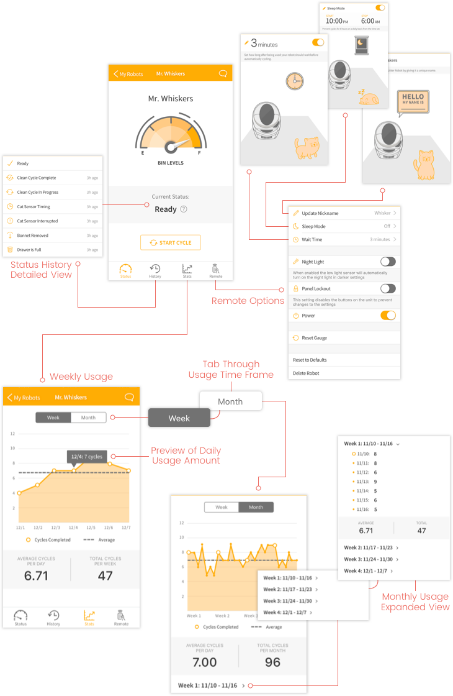

The Litter Robot app pairs alongside the smart technology litter box created by Autopets. The app provides the user a more accessible way to control and manage their Litter Robot while on the go. The user can keep track of the current status and waste bin levels to see when they will need to empty it out. They can control the settings on the hardware by initiating a clean cycle, as well as setting sleep mode times and wait time before the robot cycles. They also have the ability to track how often their cat is using the litter box, allowing them to see if there have been any drastic changes in usage which could be a sign of health issues.

Design
The client wanted the design to be clean, light and playful, as well as maintaining a minimalistic flow. They also wanted the color scheme and font selection to be consistent with their pre-existing design direction that was being used for their website.
My absolute favorite part about working on this project was getting to create the custom illustrations and animations. We knew from the start that I would need to create an illustration of the Litter Robot, but as I got to know the client more and the branding direction they had envisioned, I immediately knew I wanted to incorporate a playful cat illustration into the designs. The client liked the cat so much that they centered their animated marketing videos around it that they broadcasted at CES.
Once on board with the cat, it opened up a whole new level of illustrations and animations possibilities. In fact, because of it they wanted to extend the design portion of the project by an extra 2 months in order to include it all.
UI & Interactions

CES
One of the greatest opportunities I’ve had to date was getting to join the Autopets team at the 2017 Consumer Electronics Show (CES) in Las Vegas, Nevada. While there I got to help pitch their latest Litter Robot model by presenting the new accompanying app I designed to people all over the world. It allowed me to test my abilities to successfully inform others even when there is a language barrier present.
Challenges
A major challenge I faced was initially the client only wanted us to do extremely minimal design work and just continue building where their previous developer had left off. Problem was, there wasn’t a designer working alongside the original developer and he didn’t have any design experience. Upon viewing what was already built, major red flags stuck out with the overall flow of the app. It was pretty evident from the get go that we needed to sway the client to re-evaluate their plans to include more design work in order to adapt the information architecture so it would be more aligned to user expectations and increase the app’s success.
I started out by mocking up a few of the existing screens and altering only the bare minimum, most dire design changes that would result in the least amount of additional work added to the developers. The client liked the changes so much that they decided to extend the design services.
Due to time restrictions and budget restraints, the original information architecture remains intact, but I was able to make changes within it that drastically improved functionality. I’ve already established and created the designs that support a more natural hierarchy and flow for the users that will be applied for iOS V2 and Android. Overall I am very pleased with how iOS V1 turned out, considering the state it started in and the limited resources given for design.
It’s always an adventure for designers to acquire and continue on another designer’s vision, but taking on a project that requires you to work within an already established information architecture adapt it without getting to change the overall flow is a true test of one’s ability to think outside the box.